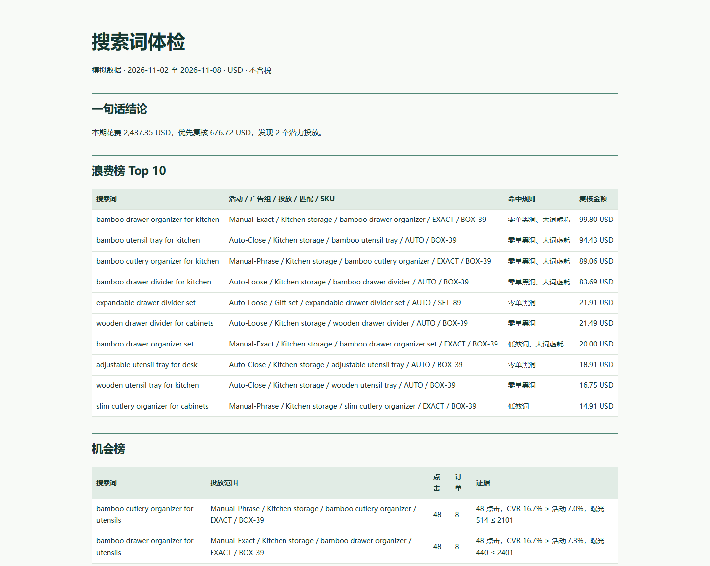

SKILL · AMAZON ADS · 2026.11
搜索词体检
亚马逊广告搜索词 CSV → 浪费榜、机会榜、全量动作清单、周报
运营每周都要翻搜索词报告，但导出表只是一行行曝光、点击和花费。这个工具先把同一投放的原始量合计，再按利润目标判断该不该继续花钱；归因窗口没跑完的、人工还没核对意图的，单独放进观察与待核对，不混进“否定”建议。
01它产出什么
样例报告覆盖 2026-11-02 至 2026-11-08、USD、不含税，全部为模拟数据：本期花费 2,437.35 USD，优先复核 676.72 USD，发现 2 个潜力投放，动作清单覆盖 59 项投放。
浪费榜 Top 10
按复核金额排序，每条注明命中的规则：零单黑洞、低效词、大词虚耗。复核金额是超出该行目标的广告费，用来排优先级，不等于最终利润。
机会榜
有转化、CVR 高于活动均值、曝光仍偏低且 ACOS 达标的投放；要求人工意图已确认为“相关”，扩量前仍需小范围验证。
动作清单
全量投放逐条给出理由、商品用途 / 人工意图和下一步动作，可展开查看证据；打印时自动展开。
周报与环比
两期口径一致时，给出 ACOS 变化百分点与花费、销售额、点击、订单的绝对变化；本期消失的投放单独列出。
02判断口径
- ACOS 上限
- 广告前贡献毛利率 − 预留利润率，最低为 0；缺少贡献率时才回退配置里的 target_acos，报告注明用的哪套口径。
- 归因成熟度
- 默认按 Sponsored Products 卖家 7 天窗口；缺少结束或数据截至日期、窗口未跑完时，只给观察动作。
- 零单门槛
- 默认 30 次点击；潜力词另用 40 次点击，并同时要求意图确认、低曝光、CVR 与 ACOS 达标。
- 匹配类型
- 同一搜索词在不同匹配类型下分开聚合，避免“精确零单、词组有单”被合计后误判。
- 两期对比
- 日期必须相邻、等长且都已过归因窗口；聚合维度不一致时提示补齐或统一裁列。
- 可复核
- HTML / Markdown / JSON 同源；JSON 记录规则版本、输入与配置文件名、SHA-256 和生效阈值。
03怎么跑
本机已在 Windows、CPython 3.9.7、PyYAML 6.0 验证。运营同事可直接双击 搜索词体检.pyw，选择本期 CSV、可选上期和输出位置；窗口使用 Python 自带的 Tk，不需要装额外界面库。
# 生成 HTML 报告（可带上一期做环比）
python scripts/report.py samples/sample_input.csv --previous samples/sample_previous.csv --output demo.html
# 额外输出证据 JSON
python scripts/report.py samples/sample_input.csv --previous samples/sample_previous.csv --json --output evidence.json
# Markdown 周报
python scripts/report.py samples/sample_input.csv --output report.md
# 规则单测
python -m unittest discover -s tests -v输入字段统一维护在 scripts/parse.py，CSV 编码 UTF-8（可带 BOM），金额按原币显示。旧七列表缺少广告组、匹配类型等维度时，报告显示“未提供”，不猜。
04验证与边界
10 项规则单测全部通过，覆盖金额回退、点击门槛边界、归因成熟度、匹配类型拆分、两期对比、维度不一致和 HTML 转义。样例 CSV 与报告均为模拟数据。
- 不连接亚马逊广告后台，也不自动改价或否词；报告交付的动作由运营复核后执行。
- 复核金额只用于排查优先级，实际利润还要核对结算、退款与商品成本。
- 换类目时要重新核对利润预留、转化目标、点击门槛和归因参数，不能照搬。

给面试官：直接发 样例报告 PDF 即可，首页标明了模拟数据。需要看规则实现时，可现场跑一遍单元测试和两期对比。